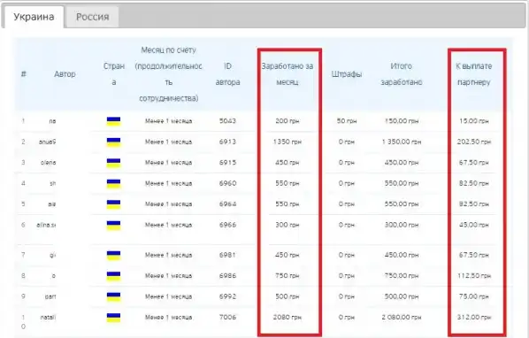

Почему именно этот оффер?
- Актуальности удаленной работы, особенно сейчас, когда все находятся на карантине.
- Широкая целевая аудитория: мужчины и женщины, 25-40+.
- Присутствие условно-бесплатных методов добычи трафика: социальные сети, сайты поиска работы, группы в Телеграм, доски объявлений.
- Наличие красочного лендинга для слива трафика, ГЕО - все СНГ.
- Достойная комиссия: 15% от всего дохода автора.
Как это работает
Вы размещаете вакансию в интернете о поиске исполнителей для студенческих работ. На нее откликается автор, регистрируется по вашей реферальной ссылке и заполняет анкету. Далее выполняет тестовое задание и проходит собеседование с менеджером по телефону. Если автор соответствует всем критериям сервиса, он получает доступ к личному кабинету и заданиям по утвержденным дисциплинам. После чего начинает работать. В своем кейсе мы приведем пример привлечения трафика из сайта поиска работы work.ua и доски бесплатных объявлений OLX, а также поделюсь статистикой расходов и доходов. Аналогичные действия вы можете применять к сайтам: headhunter, rabota, superjob, и к доскам объявлений типа Avito. Агрегаторов объявлений на рынке СНГ очень много, некоторые из них позволяют разместить вакансии совершенно бесплатно, например: Jobs, Jooble. Также не стоит забывать про соцсети: Facebook, Однокласники, там тоже очень много нашей аудитории 25+, в Телеграм чатах поиска работы можно поспамить своей вакансией и получить кучу бесплатного трафика.
Сколько можно заработать
Не будем ходить вокруг да около, а перейдем сразу к статистике и заработку. Мы решили начать с платных размещений с минимальными вложениями, так как они требуют меньше затрат по времени. Вам рекомендуем начинать с бесплатных источников, чтобы изучить эту тему целиком, а уже потом вкладывать деньги!
Размещение на сайте work.ua Work.ua - самый популярный сайт по поиску работы в Украине. У них нет бесплатных лимитов, но есть одно преимущество - они разрешают публиковать вакансии по студенческим работам, в отличии от сайта rabota.ua.
Поскольку наша ЦА находится в небольших областных центрах, об этом чуть ниже, мы купили пакет услуг “start-3” и разместили вакансии в трех областях. Области выбирали пальцем в небо, опираясь на интуицию. Уже спустя несколько часов появились первые лиды.

Статистика за март 2020
- Стоимость размещения: 690 гривен (27$)
- Зарегистрировалось авторов: 323
- Активные авторы: 49
- Всего заработано: 3823,50 (152$)
- Чистая прибыль: 3142,50 гривен (125$)
Размещение на OLX.ua OLX.ua - доска бесплатных объявлений, монополист в Украине. За размещение вакансии они взимают чисто символическую плату. Плюс есть ряд дополнительных бустов для объявлений, которые загоняют его в ТОП.
Главное преимущество OLX в том, что в тексте объявления можно оставить свою ссылку и забыть про этот источник. Минус - авторы могут вам позвонить по телефону, и если вы не владеете информацией, им просто нечего ответить.
Мы отвечали на звонки, и с помощью СМС сообщений со своей рефкой направляли их на сайт сервиса, с просьбой ознакомиться с информацией на сайте. Круто, что на лендинге Kabinetavtora.com есть максимум инфы и целый ряд видеороликов.